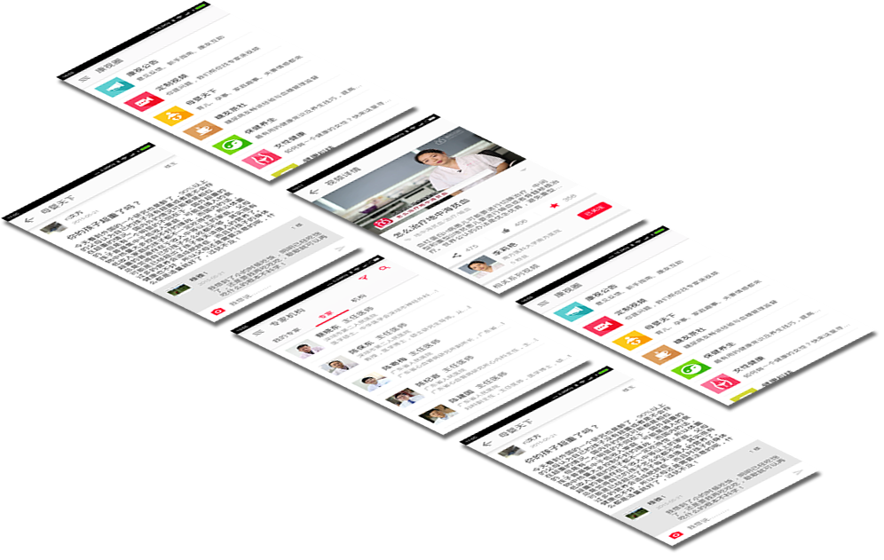

Toggle navigation
分类
母婴
心脏
肝脏
消化
母婴
心脏
肝脏
消化
母婴
心脏
肝脏
消化
董文教授
帐户设置
我的收藏
...
退出登录

V3.12.24 201500154 更新时间 2015年9月1日
Your browser does not support the video tag.
肺癌的八项治疗
蔡晓东
主任医师
南方医科大学南方医院
日前，本田发布了新款概念车Project 2&4车型的官图，该车具有独特的悬浮式座椅设计，搭载来自于本田RC213V摩托车的1.0L V4发动机，车重仅为405kg。根据官方发布的消息，本田Project 2&4概念车将于本月举行的法兰克福车展上正式发布。
从本次发布的官图可以看到，本田Project 2&4概念车采用类似于卡丁车的单座车身，但其座椅偏置于车身左侧，并采用悬浮式设计，方向盘前方设置有仪表显示屏。根据官方发布的信息，本田Project 2&4概念车全车重量仅为405kg。
查看更多
更多视频
最新视频
3:10
盆腔炎并不可怕！
南方医科大学南方医院
李莉艳
“康视百科”是由深圳市康视百科健康科技有限公司、CUTV、深圳市健康教育促进中心、广东省医院协会健康管理专业委员会等政府卫生机构共同打造的健康宣教公益平台。通过视频介绍全国各大医院的重点科室、知名医生及健康医疗科普、急救、术前术后注意事项、术后康复知识等，帮助群众建立科学的健康管理观念，引导群众针对健康问题采取积极理性的应对措施，正确就医，让各方在和谐社会生活中受益。
康视百科微信公众号
Copyright © 2015 kswiki.com 粤ICP备15058769号-1
关于康视
|
商务合作
|
联系我们